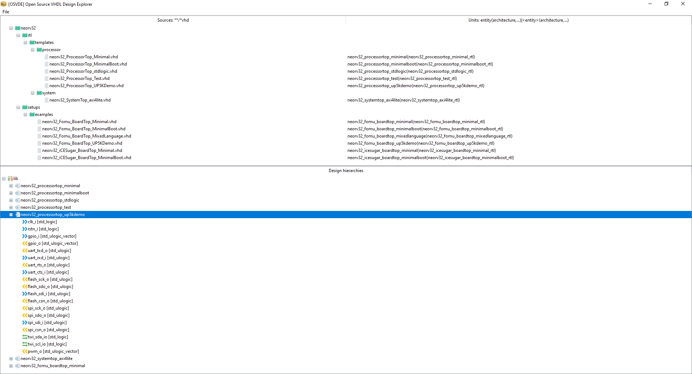

Project¶
This section covers the definition of an API for binding the sources and options from the Core to the interfaces in Tool, Runner and Logging. The Project management API is responsible for deciding which tasks to execute, the order, and the file dependencies and artifacts.
This is probably the most complex piece of all the API sections, because it is the less constrained. Interaction with tools and manipulation of file formats are technically limited by the interfaces and capabilities in those. Therefore, although there is flexibility in the implementation of Core, Tool, Runner and Logging, all of them need to match some external resource. Conversely, defining what a project is and how to handle it needs to be specific for each use case (say organisation, company, open source project…), so there is a vast space of different workflows, all similar but particular enough. Therefore, the elaboration of the API in this section is delayed until others are defined, since that will allow working on a finite scope.
Open Source VHDL Design Explorer (OSVDE)¶
OSVDE is GUI for hardware designers to understand and use projects/repositories. It allows exploring the HDL sources, entities/hierarchies, testbenches, tasks, etc. It is mostly meant for VHDL designers (but not only) and particularly for users of VHDL >= 2008.
Important
OSVDE is a proof of concept for prototyping the integration of multiple pieces in the OSVB. It is not actively developed per se, but used as an umbrella for pyVHDLModel, pyGHDL, pyCAPI, etc.
Introduction¶
pyVHDLModel is an abstract language model for VHDL written in Python. That is, a set of classes that represent the objects found in VHDL sources, and utils for manipulating and interacting with those classes. The generation of an specific object tree for an specific VHDL codebase is done by a frontend. Currently supported frontends are pyGHDL and pyVHDLParser.
As a matter of fact, GHDL is the most complete open source VHDL parser and analyser, and more complete than several vendor tools. However, GHDL is written in Ada, and it was not initially designed for the analysis features to be used standalone. Therefore, most developers of tooling around the VHDL language do typically not use GHDL but try reimplementing the parsing themselves. That is the case of VUnit, TerosHDL, Symbolator, vhdl-style-guide, VHDLTool, etc. All of those projects need some understanding of the models they are dealing with, and they use regular expressions, tree-sitter, ANTLR or similar general purpose parser engines. That is unfortunate because many of them do use Python, so the effort duplication in the community might be significantly reduced if they could interact with GHDL’s parser/analysis through Python.
Since July 2021, pyVHDLModel and pyGHDL provide a ready-to-use solution. By using those, developers can get a pythonic representation of VHDL sources, using less than 10 lines of Python code which depend on GHDL and Python only. We believe that projects such as the ones mentioned above could greatly benefit from using pyVHDLModel, as long as they are good with depending on GHDL. However, we are aware that reworking an stable codebase is not the most appealing task, so developers will not be willing to use pyVHDLModel straightaway. In this context, the main purpose of OSVDE is to showcase pyVHDLModel and to build a critical mass for creating higher abstraction features on top. Potential consumers of pyVHDLModel are all the tools which benefit from programmatically using knowledge about a VHDL codebase.
Note
Projects which don’t want to depend on a binary/compiled tool (GHDL), can use a Python only frontend for pyVHDLModel. That is precisely the purpose of pyVHDLParser (actually where pyVHDLModel was conceived). However, pyVHDLParser is not as mature as (py)GHDL yet.
OSVDE is a GUI tool written in Python only, using tkinter, the standard Python interface to the Tk GUI toolkit (see Graphic User Interface FAQ). The motivation for using both Python and tkinter is reducing the dependencies to the bare minimum available on several plataforms. As said, the purpose of OSVDE is not to provide the best performance for (very) large designs, but it’s for prototyping the integration of other pieces such as pyCAPI, pydoit and OSVR.
Installation¶
Install a recent version of GHDL and a matching pyGHDL. As explained in Python Interfaces, the following pip command can be used:
pip3 install git+https://github.com/ghdl/ghdl.git@$(ghdl version hash)
Alternatively, get a tarball/zipfile of the GHDL repository, extract it, and set PYTHONPATH accordingly.
Then, retrieve this repository (OSVB) and install the dependencies of pyOSVDE:
pip3 install -r mods/pyOSVDE/requirements.txt
Usage¶
Start OSVDE by executing ./mods/pyOSVDE/main.py.
By default, the ‘Open Directory…’ is triggered, asking the user to select a directory containing VHDL sources.
Upon selection, the whole directory is scanned recursively, searching for either *.vhd or .osvdeignore files,
and all the VHDL sources are added to pyVHDLModel Design as Document
of a LibraryStatement.
Then, the Design model is used for generating the content of the GUI.
Hint
Ignore files use the same syntax as regular .gitignore files, and prevent OSVDE from processing some content.
In fact, gitignore-parser is used for parsing .osvdeignore files.
Attention
Currently, pyGHDL crashes (produces a segmentation fault) if “too many” files are analysed at the same time.
That is actually a bug, because GHDL itself can handle the same sources for simulation and/or synthesis.
While the bug is being fixed, it is recommended to use .osvdeignore files for testing OSVDE with a limited number
of sources.
{kind=link}

Fig. 3 Repository stnolting/neorv32 opened in OSVDE.¶
As shown in Fig. 3, at the top part of OSVDE the hierarchy of the source files is shown. For each VHDL source, a column shows the units (entities and/or architectures) defined in it. As a complement, at the bottom part the logical hierarchy of the units is shown, grouped by library. For each entity, the ports are shown, including the mode, the name and the type.
Important
For now, *.vhd files are scanned only, and all of them are analysed into library lib.
That is because the definition of the Filesets and the Project is out of the scope of OSVDE.
As discussed above, pyCAPI and the project API are to be reused in OSVDE for that purpose.
Future work¶
Some enhancements and features we would like to integrate into OSVDE are the following:
Dependency tree and logic hierarchy elaboration though GHDL.
Task running/triggering:
Discovery of VUnit run scripts (see VSCode TerosHDL, VSCode VUnit Test Explorer, Sigasi Studio XPRT).
Discovery of pydoit task definition files (see Tool).
Allow running tasks and showing the results in a window.
‘Edit source in editor’ or ‘Open project in editor’, where IDE is VSCode, (neo)vim, emacs, notepad++…
Documentation generation:
Entity symbol (see Symbolator, xhdl).
Single page HTML/reStructuredText/markdown body (see TerosHDL CLI examples).
Sphinx project/domain with cross-references (placeholder: VHDL/sphinx-vhdl).
Graphviz/netlistsvg diagram.
For Sphinx (see sphinxcontrib-hdl-diagrams).
For asciidoctor (see Asciidoctor Diagram).
Pretty printing, formatting…
Customisable style (see vhdl-style-guide, VHDLTool).
pyVHDLModel/pyGHDL enhancements:
Preserve comments.
Preserve identifier casing.
OSVDE reference¶
-
class
pyOSVDE.main.OSVDE[source]¶ -
-
loadDesignTree(parent='')[source]¶ Populate the DesignTreeView with the data from the pyVHDLModel Design.
-
loadFileTree(parent='')[source]¶ Populate the FileTreeView with the data from the pyVHDLModel Design.
-
parseDir(dirName: pathlib.Path)[source]¶ Parse all the
.vhdfiles found through a recursive glob, honoringosvdeignorefiles.
-
parseFile(sourceFile: pathlib.Path, library: str = 'lib')[source]¶ Add a VHDL source to the pyVHDLModel Design.
-